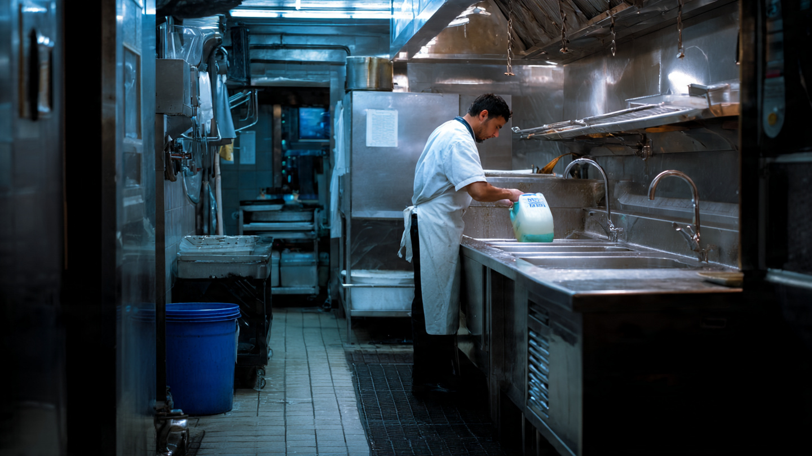

Restaurant FOG Compliance SaaS for Grease Trap Management
The EPA estimates that 23,000 to 75,000 sanitary sewer overflows occur every year in the United States. Fats, oils, and grease from commercial kitchens cause up to 47% of those backups, according to industry data. There are over one million food service establishments in the country, and the vast majority track their grease trap cleaning schedules with paper manifests and phone calls. New York City fines restaurants up to $10,000 per day for non-compliance. The compliance tool connecting restaurant, hauler, and municipality doesn't exist.

The Problem
Every commercial kitchen that fries, sautés, or roasts food produces fats, oils, and grease. The industry calls it FOG. When FOG enters a municipal sewer system, it cools, solidifies, and coats the interior walls of pipes. Over weeks and months, those deposits narrow the pipe diameter until wastewater can't flow. The result is a sanitary sewer overflow: raw sewage backing up into streets, basements, and waterways.
The EPA estimates between 23,000 and 75,000 SSOs per year across the United States. FOG is the single largest contributor. A 2024 analysis by NWPX Park, a wastewater infrastructure company, attributes 47% of all SSOs to FOG buildup. Erie County, New York's Division of Sewerage Management puts the figure at 25% of all overflows. Either way, grease is the leading cause of sewer failures in the United States.
The consequences are expensive. Municipal SSO cleanup costs average $50,000 per incident according to EPA data, and a single major blockage in a trunk sewer can cost millions. For the restaurants responsible, the penalties are escalating. New York City fines non-compliant food service establishments up to $10,000 per day. Petaluma, California charges $1,000 per violation. Tampa bills $61 per hour for re-inspections. And those are just the regulatory costs. A 2025 analysis by Grease Connections found that improper grease disposal costs the average restaurant $5,000 to $100,000 or more per incident when you add emergency plumbing, business interruption, and cleanup.
Virtually every municipality in the country now runs a FOG control program. The Clean Water Act's National Pretreatment Program requires publicly owned treatment works to regulate industrial dischargers, and commercial kitchens qualify. Cities from Seattle to Austin to Boston mandate that food service establishments install grease interceptors, clean them on fixed schedules (typically every 30 to 90 days), and maintain records proving compliance. Inspectors show up unannounced. If the binder is empty or the manifest dates don't add up, the fine lands immediately.
Here's the gap: the compliance burden falls entirely on the restaurant, but no software helps them manage it. The restaurant calls a grease hauler when they remember to. The hauler shows up, pumps the trap, and hands the manager a paper manifest. That manifest goes into a binder behind the counter. When the city inspector arrives, the manager digs through the binder looking for the right dates. If a manifest is lost, misfiled, or the hauler forgot to leave one, the restaurant fails the inspection. That failure is logged in the city's system. The restaurant never finds out until the violation letter arrives weeks later.
The Gap in the Market
Software exists for two of the three parties in the FOG compliance chain. Municipalities and haulers both have tools. Restaurants have a binder.
| Company | What They Do | What's Missing |
|---|---|---|
| Linko (Aquatic Informatics) | Municipality-side pretreatment and FOG compliance management. Used by water utilities to track permitted dischargers, schedule inspections, and manage enforcement actions. Claims 316% more inspections over 4 years for utility clients. | Faces the municipality outward, not the restaurant. Restaurants never see Linko. No self-service portal for food service establishments to submit manifests, check their compliance status, or receive cleaning reminders. It's a regulator tool, not a restaurant tool. |
| ServiceCore | Grease trap pumping software for haulers. Route optimization, job scheduling, billing, and compliance documentation for liquid waste companies. QuickBooks integration. | Built for the hauler's operations, not the restaurant's compliance. Generates manifests, but the restaurant receives a paper copy and manages it manually. No municipality reporting integration. No restaurant-facing dashboard. |
| FOG-BMP (municipal programs) | Several cities have built custom portals for their FOG programs. Rosenberg, TX uses FOG-BMP to connect generators and haulers to the city's program. | Bespoke per municipality. A restaurant operating in two cities needs to learn two different systems. No standardization, no mobile-first experience, no cross-jurisdiction compliance view. Most cities don't have a portal at all. |
| Generic field service software (Jobber, ServiceTitan) | Broad field service management platforms that some grease haulers adopt for scheduling and invoicing. | Zero FOG-specific compliance features. No manifest templates, no municipality reporting, no grease trap sizing calculations, no restaurant compliance scoring. The restaurant is just another customer record. |
The pattern is clear: every existing tool is built for the entity that already holds power (the municipality with enforcement power, the hauler with recurring revenue). Nobody has built software for the entity bearing the compliance risk: the restaurant. A 40-seat taqueria in Houston with one grease interceptor cleaned every 60 days has no digital tool to schedule that cleaning, store the manifest, verify the hauler actually pumped the trap, or auto-report to the city. The owner's compliance system is a paper binder and a memory that sometimes fails.
The Solution
A three-sided SaaS platform that connects restaurants, grease haulers, and municipalities around a shared compliance record. The restaurant is the primary customer. The platform makes their compliance automatic.
1. Restaurant compliance dashboard ($39/month per location): A mobile-first app where the restaurant manager sees every grease trap at their location, its cleaning schedule, and its compliance status. Color-coded: green (compliant, next cleaning scheduled), yellow (cleaning due within 7 days), red (overdue). Push notifications when a cleaning is due. Digital manifest storage with photo capture at pump-out. Auto-generated compliance reports ready for inspector review. No binder required.
2. Hauler integration layer (free for haulers): When a grease hauler completes a pump-out, they log it in the app: date, time, gallons removed, trap condition, GPS-verified location, photos of the trap before and after. The manifest is digitally signed and instantly appears in the restaurant's dashboard. The hauler gets free fleet management benefits (scheduling, route optimization for FOG jobs) in exchange for feeding data into the platform. This creates a network effect: every hauler on the platform makes every restaurant's compliance easier.
3. Municipality reporting portal ($2,500/year per municipal program): Cities with FOG programs get a read-only dashboard showing every registered restaurant in their jurisdiction, their cleaning frequency, their compliance score, and flagged violations. Restaurants can opt into auto-reporting, which sends digital manifests directly to the city's pretreatment department. For the municipality, this replaces manual record collection and reduces the need for surprise inspections at compliant establishments. They focus enforcement on the restaurants with red status.
4. Compliance intelligence engine (included in restaurant subscription): The platform accumulates data on trap condition, cleaning frequency, and violation history across thousands of locations. It uses this data to optimize cleaning schedules. A restaurant producing less FOG (perhaps they shifted from deep frying to grilling) doesn't need 30-day cleaning cycles. The system recommends extending to 45 or 60 days based on actual trap measurements, saving the restaurant money while keeping them compliant. Conversely, a restaurant showing rapid grease accumulation gets flagged for more frequent service before a problem develops.
The Math: What Non-Compliance Actually Costs
Take a typical independently owned restaurant in a mid-size city. Annual revenue: $1.2 million. One 1,500-gallon grease interceptor, cleaned every 60 days. Cleaning cost per pump-out: $350. Annual cleaning cost: six pump-outs at $350 = $2,100.
Scenario A: Paper-based compliance (status quo). The manager forgets to schedule the October pump-out. The trap overflows in early November. Emergency plumber: $1,200. Kitchen closed for 4 hours during lunch rush: lost revenue of approximately $800. City inspector arrives three days later, finds no manifest for October, issues a violation. Fine: $500 first offense. Re-inspection fee: $150. The restaurant is now on a 30-day inspection cadence for the next six months instead of annual. Manager spends two hours per month preparing for inspections instead of running the restaurant. Total cost of one missed cleaning: $2,650 in direct costs, plus roughly 12 hours of management time over the enhanced inspection period.
Scenario B: SaaS-managed compliance. The platform sends a push notification 7 days before the October cleaning is due. The manager confirms. The platform dispatches the scheduled hauler. After pump-out, the hauler logs the service with GPS verification and photos. The digital manifest appears in the restaurant's dashboard and is auto-reported to the city's FOG program. Inspector reviews the restaurant's green compliance status remotely, skips the in-person visit. Zero fines, zero emergency plumbing, zero management time wasted. Annual platform cost: $39/month × 12 = $468.
The savings math runs one direction. A single prevented violation saves $2,650 or more. The platform costs $468/year. Even if the restaurant never has an emergency, the time saved on manifest management and inspector preparation pays for the subscription. For multi-location operators, the math gets even better: a 10-location restaurant group spends $4,680/year on the platform versus potentially $26,500+ if even one location per year has a compliance failure.
Revenue Model
| Revenue Stream | Amount | Notes |
|---|---|---|
| Restaurant SaaS (per location/month) | $39 | Core compliance dashboard, scheduling, digital manifests, inspector-ready reports. Month-to-month, no contract required. |
| Multi-location enterprise tier | $29/location/month | 25% discount for 5+ locations. Centralized compliance view across all locations. Target: regional chains, franchise groups. |
| Municipal program license | $2,500/year | Read-only compliance dashboard, auto-reporting integration, violation flagging. Sold to city pretreatment departments. |
| Hauler marketplace referral | 15% of first service | Restaurants without an existing hauler relationship get matched to a nearby hauler on the platform. One-time referral fee. |
| Data analytics tier | $99/month | For multi-location operators: benchmarking FOG production across locations, optimized cleaning schedules, cost reduction recommendations. |
Unit economics on a single restaurant: Monthly revenue: $39. Gross margin at scale: 85% (cloud infrastructure, support). Customer acquisition cost via restaurant association partnerships and hauler referrals: ~$120. Annual revenue per customer: $468. LTV at 3-year average retention (restaurants churn slowly on compliance tools they've integrated into operations): $1,404. LTV:CAC ratio: 11.7x.
Market Size
TAM: The National Restaurant Association reports over one million restaurant locations in the United States, part of a broader food service industry employing 15.7 million people and generating $1.55 trillion in sales in 2026. Not all produce sufficient FOG to require a grease trap. Excluding establishments with minimal cooking (coffee shops, ice cream parlors, some bakeries), approximately 700,000 food service establishments operate grease interceptors. At $39/month = $468/year: $327.6M/year in restaurant SaaS revenue. Adding municipal licenses and hauler marketplace fees: approximately $400M total addressable.
SAM: Focus on the 25 states with the most aggressive FOG enforcement programs, which contain roughly 60% of food service establishments. Target independently owned restaurants and small chains (1-20 locations) where compliance is most burdensome. Approximately 250,000 establishments. At $468/year: $117M/year.
SOM (year 3): 4,000 restaurant locations across 15 metro areas at blended $420/year (mix of single-location and multi-location pricing) = $1.68M ARR, plus $150K in municipal licenses and $80K in hauler referral fees. Total: $1.91M.
Why Now
EPA consent decrees are forcing municipal FOG enforcement to a new level. When a city's sewer system violates the Clean Water Act through repeated SSOs, the EPA issues a consent decree requiring the city to fix the problem. These decrees increasingly mandate FOG control programs with specific inspection cadences and documentation requirements. Cities under consent decrees don't have the option to be lenient. They need to show the federal government that every food service establishment in their jurisdiction is compliant, and they need the data to prove it. A platform that generates that data automatically is a compliance shortcut for both the city and the restaurant.
The grease trap cleaning market is consolidating. The global grease trap cleaning service market reached $4.2 billion in 2025 and is projected to grow at 6.8% annually through 2034. Larger waste haulers are acquiring smaller operators, and they want digital tools to manage their expanded fleets. A hauler integration platform that comes pre-installed in their restaurant customers' operations reduces their scheduling burden and locks in the customer relationship.
Restaurant technology adoption has accelerated permanently. The pandemic forced restaurants to adopt online ordering, QR code menus, and digital payment systems. A 2024 NRA survey found that restaurants now spend more on technology than at any point in the industry's history. The resistance to "another app" has diminished. A restaurant owner who manages their POS on Toast, their reservations on Resy, and their payroll on Gusto is ready for a compliance app that saves them from a $10,000 fine.
Insurance carriers are starting to ask about FOG compliance. Commercial property insurers underwrite restaurants knowing that grease fires and sewer backups are among the top claims. Some carriers are beginning to request documentation of grease trap maintenance as part of the underwriting process. A digital compliance record that can be shared with an insurer in two clicks creates a new value proposition beyond municipal compliance: lower insurance premiums for restaurants that can prove maintenance history.
Startup Costs
| Category | Cost | Notes |
|---|---|---|
| Software development (MVP: restaurant dashboard + hauler app, 6 months) | $220K | 2 full-stack developers + 1 mobile developer. React Native app for restaurant managers and haulers, web dashboard for multi-location operators, basic municipality reporting view. |
| Compliance engine and scheduling logic | $60K | Rules engine encoding FOG program requirements for 50 largest US municipalities. Cleaning schedule optimization based on trap size, cuisine type, and historical data. |
| Pilot program (50 restaurants in 2 cities) | $25K | Free subscriptions for first 50 restaurants. Partner with 3-5 haulers per city. Cover onboarding support and feedback collection. |
| Restaurant association partnerships | $15K | State restaurant association sponsorships, trade show presence (NRA Show, local food service expos). Co-marketing with haulers. |
| Legal and regulatory review | $20K | FOG program compliance mapping across target municipalities. Privacy policy, terms of service, data handling for municipality-shared records. |
| Cloud infrastructure (12 months) | $18K | AWS/GCP hosting, image storage for manifest photos, SMS/push notification services, GPS verification API. |
| Operating buffer (12 months) | $42K | Customer support, hauler onboarding, municipality relationship management. |
| Total | $400K |
Limitations
The 700,000-establishment TAM estimate is an approximation. The National Restaurant Association counts over one million restaurant locations, but that includes coffee shops, juice bars, and other establishments that may not have grease interceptors. There is no federal database of installed grease traps. The actual count of food service establishments operating grease interceptors could be as low as 500,000 or as high as 800,000, depending on how broadly municipalities define "food service establishment" in their FOG ordinances. Some cities exempt establishments that only reheat pre-cooked food.
FOG enforcement intensity varies enormously by municipality. Cities under EPA consent decrees (like those with chronic SSO problems) enforce aggressively. Other cities have FOG ordinances on the books but rarely inspect. In low-enforcement jurisdictions, the restaurant owner's motivation to pay $39/month for compliance software is weak. The product's value proposition depends directly on how likely the restaurant is to be inspected and fined, which is a function of local political will, not just regulation.
The three-sided network (restaurant, hauler, municipality) creates a cold-start problem. The platform is most valuable when all three parties are on it, but you have to start somewhere. Launching with hauler integration before municipal partnerships are in place means the auto-reporting feature, one of the strongest selling points, isn't available at launch. The MVP may need to succeed purely on the strength of the restaurant compliance dashboard and hauler scheduling, without the municipal connection.
The 47% SSO causation figure from NWPX Park is an industry estimate, not a peer-reviewed finding. EPA does not publish a definitive FOG attribution percentage for SSOs. The 25% figure from Erie County is based on their local data and may not generalize nationally. The true percentage likely varies by region, sewer age, and municipal maintenance practices.
Strongest Counterargument
Waste Management, Republic Services, or another national waste hauler could build this tomorrow. The largest grease trap haulers already have the customer relationships, the route data, the manifest history, and the capital. If a hauler like Liquid Environmental Solutions (one of the largest grease and FOG service providers in the US) decided to offer a free compliance app to their restaurant customers, they'd have instant distribution through their existing service contracts. Their sales team is already in the kitchen every 30 to 60 days pumping the trap. Handing the manager a tablet and saying "here, your compliance reports are digital now" is a trivial add-on to an existing service visit.
The counterpoint: large haulers have known about the restaurant compliance gap for years and haven't built the tool. Their business model is pump-and-haul, not SaaS. They make money on service volume and route density, not on $39/month subscriptions. Building a compliance platform means hiring software engineers, managing a SaaS product, selling to municipalities, and supporting restaurant managers who call with login problems. That's a fundamentally different business from running a fleet of vacuum trucks. The hauler who tried would face the classic innovator's dilemma: the compliance platform cannibalizes their information advantage (the hauler currently knows more about the restaurant's grease trap than the restaurant does, and that asymmetry helps the hauler control the service relationship). Making compliance transparent gives the restaurant the power to comparison-shop haulers, which is against the incumbent's interest. A startup with no hauler revenue to protect can build the transparent marketplace that no hauler would voluntarily create.
What You Can Do
If you own or manage a restaurant: Pull out your grease trap manifests right now and check: are all cleanings documented for the past 12 months? If any are missing, call your hauler and request duplicate copies before your next inspection. Set a recurring calendar reminder for every cleaning date. This costs nothing and is the minimum viable compliance system. If you want to go further, photograph every manifest with your phone and store them in a cloud folder. You now have a backup your binder doesn't.
If you're a grease hauler considering this market: Your competitive advantage is data. You already visit thousands of kitchens. The restaurant that signs up for your digital manifest app is a restaurant that won't switch to a competitor, because switching means losing their compliance history. Start by offering digital manifests with your service. Build a simple web portal where your customers can view their service history. That's the seed of the platform. Partner with one municipality to pilot auto-reporting and you've got a proof-of-concept.
If you work in a municipal pretreatment department: Count how many hours your inspectors spend collecting paper manifests from restaurants. Calculate the cost of that labor. Now imagine every restaurant in your FOG program submitting digital manifests automatically. The labor savings alone likely justify a $2,500/year platform subscription, and the improved compliance data makes your EPA consent decree reporting dramatically easier. Reach out to restaurant associations in your city about piloting a shared compliance platform.
The Bottom Line
A million restaurants produce grease. Cities require them to manage it. Haulers come and pump it. And the compliance proof that ties the whole system together is a piece of paper that gets lost in a binder, misfiled in a drawer, or forgotten entirely until an inspector asks for it and the fine arrives. The software connecting these three parties is a solved problem in other regulated industries: healthcare has electronic medical records, food safety has HACCP management platforms, environmental compliance has emissions tracking software. FOG compliance is stuck in the paper era because the restaurant is the smallest, least-organized, most distracted party in the chain, and nobody has built the tool that makes compliance their default state instead of an afterthought. At $39/month per location, the math works for the restaurant, the hauler, and the city. The first company to own that three-way data layer will find that compliance infrastructure, once embedded in daily operations, is extraordinarily hard to rip out.